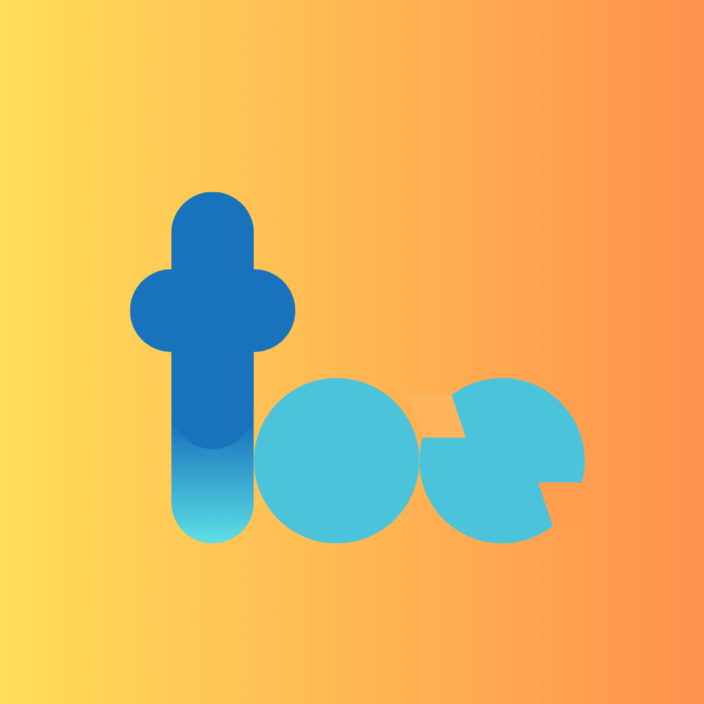
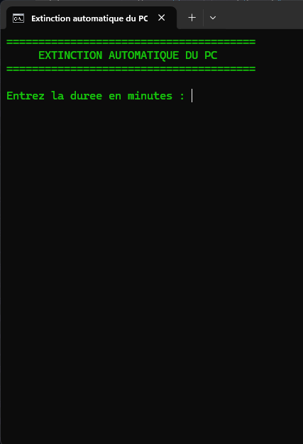
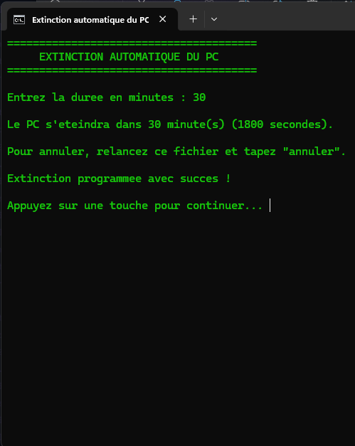
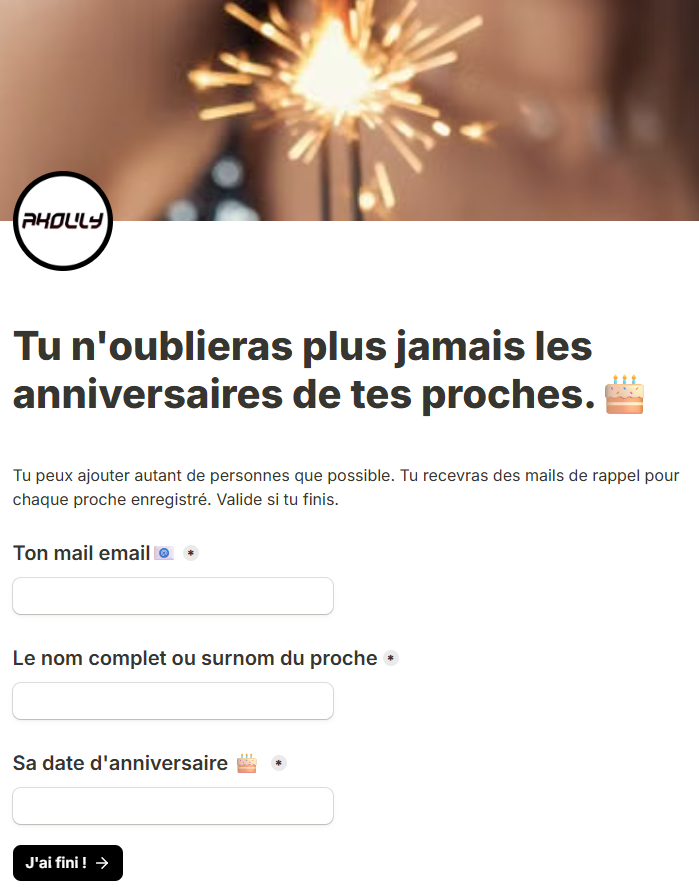
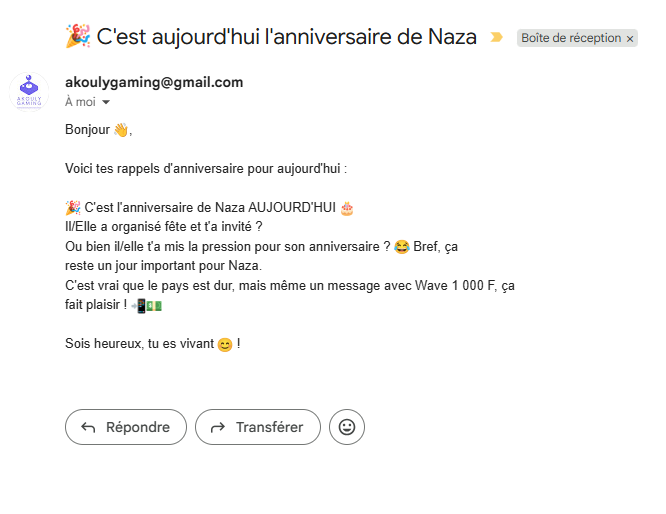

Développement d'expériences logicielles et mobiles centrées sur l'utilisateur, allant d'applications Flutter aux jeux multijoueurs locaux et assistants IA.

Too est une application mobile pensée pour les couples, combinant défis complices, gages romantiques et activités ludiques pour renforcer l'intimité et pimenter le quotidien.


Poweroff est un utilitaire léger conçu en script .bat pour programmer facilement l'extinction automatique de son PC. Idéal lorsque l'on a lancé une tâche qui doit prendre 1h (téléchargement, rendu, analyse) mais que l'on doit sortir en urgence.


Mémo Anniv est un formulaire rapide conçu pour ne plus jamais manquer un anniversaire. Grâce à un formulaire sans installation, enregistrez les dates clés de vos proches en 30 secondes. Recevez des rappels automatiques (J-30, J-7, Jour J) pour anticiper vos cadeaux ou surprises, et souhaiter le meilleur à temps.


Projet en cours de développement.
Contrix transforme votre smartphone en manette et votre PC en écran géant de jeu. Le PC affiche le jeu, les animations et le classement en direct ; chaque téléphone se connecte en Wi-Fi/WebSocket et s'adapte automatiquement à chaque mini-jeu — joystick virtuel, capteur de mouvement, pavé tactile ou clavier. Plus de 16 mini-jeux, un mode 100% offline pensé pour l'Afrique, un quiz culturel sur la Côte d'Ivoire, et bien d'autres jeux.
Un créateur passionné par la conception d'applications qui répondent à des besoins réels.
« Je ne maîtrise aucun langage de programmation — au mieux, je sais en reconnaître un. Je compte apprendre Python, mais pour le reste, ma force réside dans ma capacité à exploiter au maximum l'intelligence artificielle pour concevoir, structurer et réaliser mes objectifs. »
Objectif du projet et justification des choix techniques
Créer une expérience mobile intime et sécurisée pour dynamiser les relations de couple. L'objectif était de concevoir une application fluide, chaleureuse et captivante sans complexité superflue, permettant à deux partenaires de lancer instantanément des défis interactifs.
Vous appréciez l'application Too et souhaitez encourager son développement ? Votre soutien contribue directement aux futures améliorations et aux nouveaux défis interactifs !
Captures réelles de l'invite de commande et programmation
Script Batch & Automatisation Système Windows
Offrir un moyen ultra-rapide, sans installation complexe ni logiciel lourd en arrière-plan, de programmer l'arrêt automatique de son ordinateur après une durée définie en minutes (ou d'annuler une extinction en cours).
shutdown -s -t et shutdown -a pour l'annulation).Vous trouvez cet outil pratique pour votre quotidien ? Votre soutien encourage le partage d'utilitaires gratuits et le développement de futures applications !
Formulaire intelligent, automatisation et alertes J-30, J-7, Jour J
Éliminer définitivement l'oubli des dates d'anniversaires grâce à un formulaire sans installation, ultra-léger et accessible immédiatement sur n'importe quel smartphone ou navigateur web.
Mémo Anniv est un formulaire gratuit conçu pour simplifier la vie de chacun. Votre soutien permet de maintenir les serveurs de notifications et d'ajouter de nouvelles fonctionnalités !
Univers de jeu multijoueur local (Smartphones = Manettes)
Objectif du jeu multijoueur et architecture technique
Permettre à un groupe d'amis ou une famille de jouer ensemble instantanément sur un même écran de PC, sans acheter de manettes dédiées coûteuses. Chaque joueur connecte son smartphone au même réseau Wi-Fi local, et l'app s'adapte automatiquement au mini-jeu en cours.
Contrix est un projet de jeu vidéo 100% indépendant conçu pour le divertissement local. Votre soutien accélère directement le prototypage et l'ajout des prochains mini-jeux !